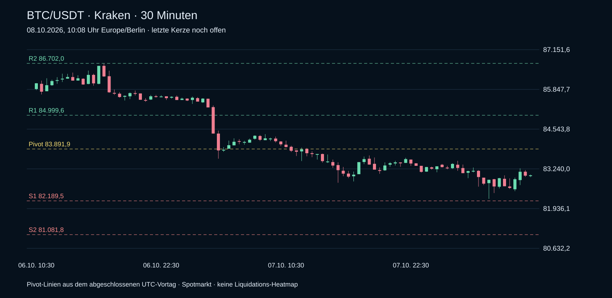

Tagesstand 08.10.2026 · 08.10.2026, 10:08 Uhr
Aktuelle Kraken-Spotkurse und echte 30-Minuten-Kerzen. Technische Marken aus dem abgeschlossenen Vortag. Die ältere Heatmap steht separat unten.
BTC · aktueller 30-Minuten-Chart
Kraken Spot · echte Kerzen · Pivot-Marken aus dem UTC-Vortag

BTC/USDT · 83.027,8
-0,32 % zum Vortagsschluss
Tagesbereich (UTC): 82.254,6–83.504,9
Unter SMA20 (84.210,5); unter Tagespivot 83.891,9
Support: S1 82.189,5 / S2 81.081,8
Widerstand: R1 84.999,6 / R2 86.702,0
Chart ohne Heatmap
Datenstand 03.10.2026
Chart mit Liquidation Heatmap
Datenstand 03.10.2026